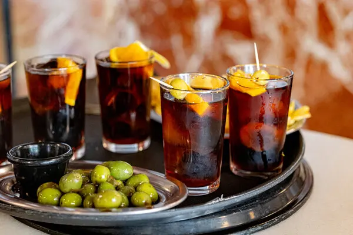

Las Vermudas
Kein klassisches Restaurant, sondern eine geführte Vermouth-Erfahrung – vier Vermouths, dazu passende Tapas, und eine kleine Einführung in eine der katalanischsten aller Traditionen.

Besonderheiten
Las Vermudas bietet kuratierte Vermouth-Tastings mit Tapas-Begleitung statt einer klassischen Speisekarte – ihr bucht ein festes Erlebnis-Paket, das euch durch verschiedene Vermouth-Stile führt, jeweils mit passend abgestimmten Häppchen. Eine entspannte, geführte Art, in den Abend zu starten, bevor es zum eigentlichen Abendessen weitergeht.
Praktische Hinweise
Adresse: Carrer de Viladomat 107, 08015 Barcelona. Kontakt: Tel./WhatsApp +34 747 435 875, E-Mail university@lasvermudas.com, Web lasvermudas.com. Euer Termin: Mittwoch, 02.09.2026, 18:00 Uhr, Paket "Mission Vermut – Explorer", 4 Vermouths + Tapas, 40 € gesamt. Reservierung: ✅ final bestätigt (Reservenummer 2553607256271920) – kein Online-Payment nötig, die 40 € werden vor Ort per Karte oder bar bezahlt. Entfernung: 2 Gehminuten von Pho Viet entfernt, ideal für den direkten Übergang zum Abendessen.